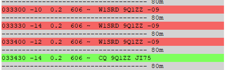

[
Date Prev
][
Date Next
][
Thread Prev
][
Thread Next
][
Date Index
][
Thread Index
]
[NCDXC Chat] Why Tube Amps Still Rule
To
: NCDXC Discussion List <
chat@ncdxc.org
>
Subject
: [NCDXC Chat] Why Tube Amps Still Rule
From
: Steve Dyer W1SRD <
w1srd@yahoo.com
>
Date
: Mon, 10 Jul 2023 20:45:11 -0700
Dkim-signature
: v=1; a=rsa-sha256; c=relaxed/relaxed; d=yahoo.com; s=s2048; t=1689047118; bh=OCkOR71l05WeRZTPRrFojmuWg2zVnzJTq3jiX0C7RTM=; h=Date:To:From:Subject:References:From:Subject:Reply-To; b=pWc1suFhMY1im52pXIR6EovaDsdt/hrxqt1iSUElks+jHiCCC78IVIbHEygpyhy+6kUBm3B192gAQ2TpJrdhVozAh6dcrEtinAddpOQ3A8k0Mja7uin3ngvi3N1fT13I8gS3hoY9UoFIAgTcGNq0Qhp3aBORSZa9tFccQw9kHcgwfN9AYMeZHBPcpGYaVXSLECW6P0JsdhLQx94Jsml1Vi4EoHp/PSZ3PP9K5KlCVBCBF39PVmPVIkABBsjHs+rWurQ9nujDM9MfQ7O8kqmaLP8VtA+5ik2sg+YrJZBTKJMDA7NbMxr4KDgATPFo4SGzNIdxSSHgh0BLJaj/zJ1Wzw==
List-archive
: <
http://mail.ncdxc.org/mailman/private/chat_ncdxc.org/
>
List-help
: <
mailto:chat-request@ncdxc.org?subject=help
>
List-id
: NCDXC Discussion List <chat.ncdxc.org>
List-post
: <
mailto:chat@ncdxc.org
>
List-subscribe
: <
http://mail.ncdxc.org/mailman/listinfo/chat_ncdxc.org
>, <
mailto:chat-request@ncdxc.org?subject=subscribe
>
List-unsubscribe
: <
http://mail.ncdxc.org/mailman/options/chat_ncdxc.org
>, <
mailto:chat-request@ncdxc.org?subject=unsubscribe
>
References
: <13e94560-34a5-a16d-56c1-7a18739b8a2d.ref@yahoo.com>
User-agent
: Mozilla/5.0 (Windows NT 10.0; Win64; x64; rv:102.0) Gecko/20100101 Thunderbird/102.13.0
SS Amp overheated... so no QSO.
By the time the Acom warmed up and I switched all the cables he QSY'ed.
Maybe tomorrow.

Follow-Ups
:
Re: [NCDXC Chat] Why Tube Amps Still Rule
From:
Rick NK7I <rick.nk7i@gmail.com>
Prev by Date:
[NCDXC Chat] Spot: KH8RRC, 24900 kHz, CW, 0304Z
Next by Date:
Re: [NCDXC Chat] Why Tube Amps Still Rule
Previous by thread:
[NCDXC Chat] Spot: KH8RRC, 24900 kHz, CW, 0304Z
Next by thread:
Re: [NCDXC Chat] Why Tube Amps Still Rule
Index(es):
Date
Thread